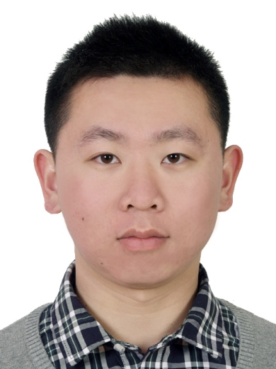

|  |
Muxin Liao (廖牧鑫)Lecturer (Young Professor)School of Computer Science and Engineering, Jiangxi Agricultural University Email: liaomx[AT]jxau[Dot]edu[Dot]cn [CV] • [Google Scholar] • [Publications] •[Github] |
About Me
-
Dr. Liao joined the School of Computer Science and Engineering of Jiangxi Agricultural University as a young professor in November 2024. Previously, he obtained a Ph.D. from the College of Electronic and Information Engineering, Shenzhen University, China, in June 2024, and the advisors are Professor Xia Li and Associate Professor Wenbin Zou. He has been engaged in research related to semantic segmentation in open road scenarios since 2020. In recent years, he has participated in several projects, such as the National Natural Science Foundation Project, the Guangdong Natural Science Foundation Project, and the Shenzhen Stable Support Project. In terms of unsupervised domain adaptive semantic segmentation, domain generalization semantic segmentation, and supervised learning semantic segmentation in structured and unstructured road scenarios, a series of works have been carried out. Now, he has published more than 20 papers, including IEEE Transactions (TIP, TMM, TCSVT, TITS, etc.) and CCF-A conferences (ACM MM). He currently serves on the 31st Association for Computing Machinery's Special Interest Group on Knowledge Discovery and Data Mining (SIGKDD Area Chair 2025, CCF-A Conference). In addition, he is a reviewer of several top journals (e.g. IEEE TIP, IEEE TMM, IEEE TNNLS, IEEE TCSVT, etc.), and conferences (ICLR 2025).
Research Interests
- Domain Adaptation
- Domain Generalization
- Semantic Segmentation
- Smart Agriculture
News
- Mar 2025, one paper accepted by Pattern Recognition (First Author, CCF-B, 中科院一区TOP).
- Jan 2025: I'm selected as the AC of 31st SIGKDD
Publications
(# indicates the student I advised or co-advised; * indicates the corresponding author.)Selected
- Muxin Liao#, Wei Li#, Chengle Yin, Yuling Jin, Yingqiong Peng, "Concept-Guided Domain Generalization for Semantic Segmentation", Pattern Recognition, 2025. (SCI, 中科院一区, IF: 7.5).
- Muxin Liao#, Shishun Tian#, Binbin Wei, Yuhang Zhang, Wenbin Zou, Xia Li, "Class-Balanced Sampling and Discriminative Stylization for Domain Generalization Semantic Segmentation", IEEE Transactions on Intelligent Transportation Systems, 2024. (SCI, 中科院一区, IF: 7.9).
- Muxin Liao#, Shishun Tian#, Yuhang Zhang, Guoguang Hua, Wenbin Zou, Xia Li, "Calibration-based Multi-Prototype Contrastive Learning for Domain Generalization Semantic Segmentation in Traffic Scenes", IEEE Transactions on Intelligent Transportation Systems, 2024. (SCI, 中科院一区, IF: 7.9).
- Muxin Liao#, Shishun Tian#, Yuhang Zhang, Guoguang Hua, Wenbin Zou, Xia Li, "Preserving Label-related Domain-specific Information for Cross-domain Semantic Segmentation", accepted by IEEE Transactions on Intelligent Transportation Systems, 2024. (SCI, 中科院一区, IF: 7.9).
- Muxin Liao#, Shishun Tian#, Yuhang Zhang, Guoguang Hua, Wenbin Zou, Xia Li, "Calibration-based Dual Prototypical Contrastive Learning Approach for Domain Generalization Semantic Segmentation", ACM International Conference on Multimedia, 2023. (CCF-A).
- Muxin Liao#, Shishun Tian#, Yuhang Zhang, Guoguang Hua, Wenbin Zou, Xia Li, "Considering representation diversity and prediction consistency for domain generalization semantic segmentation", Knowledge-Based Systems, 2024. (SCI, 中科院一区, IF: 7.2).
- Muxin Liao#, Shishun Tian#, Yuhang Zhang, Guoguang Hua, Wenbin Zou, Xia Li, "PDA: Progressive Domain Adaptation for Semantic Segmentation", Knowledge-Based Systems, 2023. (SCI, 中科院一区, IF: 7.2).
- Zijun Li, Muxin Liao*, "Learning generalized visual relations for domain generalization semantic segmentation", Expert Systems With Applications, 2024. (SCI, 中科院一区, IF: 7.5).
- Guoguang Hua#, Muxin Liao#, Shishun Tian, Yuhang Zhang, Wenbin Zou, "Multiple relational learning network for joint referring expression comprehension and segmentation", IEEE Transactions on Multimedia, 2023. (SCI, 中科院一区, IF: 8.4).
- Muxin Liao#, Shishun Tian#, Yuhang Zhang, Guoguang Hua, Wenbin Zou, Xia Li, "Domain-invariant information aggregation for domain generalization semantic segmentation", Neurocomputing, 2023. (SCI, 中科院二区, IF: 5.5).
- Muxin Liao#, Guoguang Hua#, Shishun Tian, Yuhang Zhang, Wenbin Zou, Xia Li, "Exploring more concentrated and consistent activation regions for cross-domain semantic segmentation", Neurocomputing, 2024. (SCI, 中科院二区, IF: 5.5).
- Muxin Liao#, Shishun Tian#, Yuhang Zhang, Guoguang Hua, Wenbin Zou, Xia Li, "Class-discriminative domain generalization for semantic segmentation", Image and Vision Computing, 2024. (SCI, 中科院三区, IF: 4.2).
- Wei Li#, Muxin Liao#, Wenbin Zou, "A terrain segmentation network for navigable areas with global strip reliability evaluation and dynamic fusion", Expert Systems With Applications, 2025. (SCI, 中科院一区, IF: 7.5).
- Wei Li#, Muxin Liao#, Wenbin Zou, "A progressive segmentation network for navigable areas with semantic–spatial information flow", Expert Systems With Applications, 2025. (SCI, 中科院一区, IF: 7.5).
Services
Area Chairs:- 31st SIGKDD (CCF-A)
- IEEE TIP
- IEEE TMM
- IEEE TNNLS
- IEEE TCSVT
- IEEE SPL
- CAAI Transactions on Intelligence Technology
- Knowledge-based System
- Computer Vision and Image Understanding
- Neurocomputing
- Displays
- Applied Intelligence
- Image and Vision Computing
- IET Computer Vision